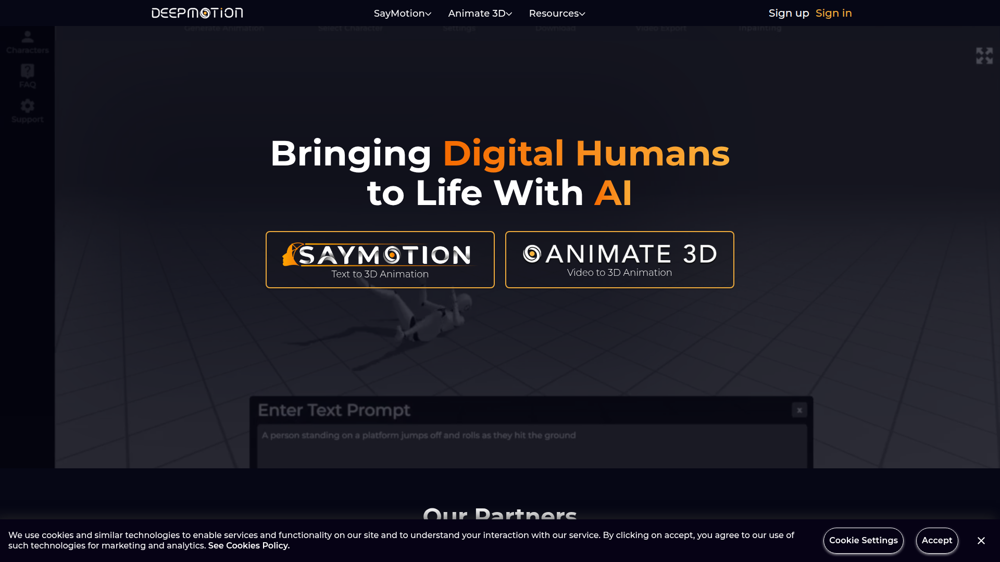

DEEPMOTION · AI ANIMATION PLATFORM
DeepMotion 是美國加州的 AI 動畫平台，定位為「最大的 AI 生成 3D 動畫平台」。提供兩大產品線：Animate 3D（影片→動畫）和 SayMotion（文字→動畫），涵蓋 video-to-motion 和 text-to-motion 雙賽道。
支援全身+臉部+手部追蹤、多人追蹤（最多 8 人）、BVH/FBX 直接匯出，並提供 REST API 支援批次自動化。

DeepMotion 獨特之處在於同時提供影片和文字兩種輸入方式生成 3D 動畫，覆蓋不同創作場景。有現成參考影片時用 Animate 3D，想從零創造時用 SayMotion。
📹 Animate 3D
Video → 3D Animation
✍️ SayMotion
Text → 3D Animation
DeepMotion Animate 3D 完整工作流程展示：從上傳影片到 AI 動作捕捉，再到匯出 BVH/FBX 到遊戲引擎。
DeepMotion — AI Motion Capture Demo
DeepMotion 支援從 30fps 到 240fps 的輸出幀率（依方案），輸入格式無限制，輸出格式涵蓋遊戲引擎常用的 BVH/FBX/GLB。Credit 按秒計費，臉部和手部追蹤各額外 +0.5 credit/秒。
Studio 方案支援 8 人多角色追蹤
Studio 方案支援 8K 解析度 + 240fps
BVH / FBX / GLB 多格式輸出
身體+臉+手
全身骨骼 + 面部表情 + 手指追蹤一站搞定
物理模擬
自動修正不自然關節角度和穿模
REST API
Animate 3D + SayMotion 雙 API 支援批次
DeepMotion 提供完整的引擎整合文件，並支援自訂角色上傳（FBX/GLB/VRM），內建 Auto Retargeting 功能可自動將動畫套用到你的角色上。
Unreal 5
官方整合文件
Unity
FBX/BVH 直入
Blender
Companion Tool
Maya
Companion Tool
MetaHuman
直接匯入
Roblox
官方支援
Credit 制：1 credit = 1 秒動畫。臉部/手部追蹤各額外 +0.5 credit/秒。Credits 每月重置不累積。Starter 以上方案可商用。
Starter 年繳方案起（180 credits）
Free
60 credits/月
非商業、2 人追蹤、20 秒影片
Starter $9-15
180 credits/月
商業授權、3 人追蹤
Pro $17-48
480 credits/月
4 人追蹤、60FPS、慢動作
Professional $39-117（1,500 cr）| Studio $83-300（無限制、8 人、240FPS）
DeepMotion 最大優勢是 Video + Text 雙模態加上直接 BVH 輸出，與 Kimodo 工作流完美相容。但免費版不可商用，且 SayMotion API 需要申請合作夥伴。
✅ 優點
❌ 缺點
DeepMotion 和 Kimodo 有極高互補性：都支援 BVH 格式、都有文字生成動作能力。DeepMotion 的 Animate 3D 補足了 Kimodo 沒有的「影片轉動畫」功能，而 SayMotion 則是 text-to-motion 賽道的另一個選擇。
格式相容
BVH 直接共用 Pipeline
DeepMotion 直接輸出 BVH，與 Kimodo 的 BVH 輸出使用完全相同的後處理工具鏈（Retarget → Foot Fix → Root Motion）。
功能互補
Text + Video 雙輸入
Kimodo = 離線 text-to-motion。DeepMotion = 雲端 video-to-motion + text-to-motion。覆蓋不同場景和品質需求。
批次自動化
API 串接量產
Animate 3D REST API 可批次上傳影片自動處理。搭配 Kimodo 本地生成，雙管齊下建置大規模動作庫。
在 AI 動作量產工作流中，DeepMotion 佔據「雲端 AI 平台」的核心位置。它同時提供 video 和 text 兩種輸入管道，並直接輸出 BVH — 這讓它能無縫銜接我們現有的 retarget + clean-up pipeline。
DeepMotion 是目前功能最全面的 AI 動畫平台之一：雙模態輸入、BVH 直接輸出、REST API、完整引擎整合。特別適合需要影片轉動畫、且要求輸出 BVH 格式的團隊。
目標相關性
⭐⭐⭐⭐⭐
技術成熟度
⭐⭐⭐⭐⭐
功能完整度
⭐⭐⭐⭐⭐
性價比
⭐⭐⭐⭐
Pipeline 整合
⭐⭐⭐⭐⭐
量產適合度
⭐⭐⭐⭐
🟢 強烈推薦 — 建議行動步驟
MotionLab Research · 2026-06-19 · deepmotion.com